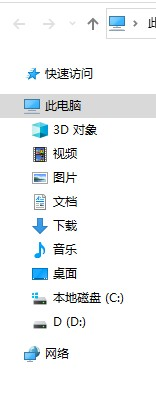

Windows设置
记录一些Windows的设置，不定期更新
2020/03/28
索引
Win+R
按下键盘的'Win'+'R'键打开运行窗，输入以下名称就可以快速打开一些电脑的程序
dxdiag -------诊断工具
msconfig -----系统配置
control ------控制面板
regedit ------注册表
explorer -----资源管理器
gpedit.msc ---组策略
service.msc --服务
compmgmt.msc -计算机管理
lusrmgr.msc --用户
devmgmt.msc --设备管理
diskmgmt.msc -磁盘管理
DOS
一些DOS命令，可以输入'/?'或'help'来查看帮助
help -------DOS命令帮助
ipconfig ---查看自身的网络配置
route ------管理自身的路由转发表（增删改查）
arp --------查看主机存储的IP和MAC的映射
systeminfo -查看系统信息（带图像界面的输入msinfo32）
tasklist ---查看当前进程列表
query ------查询进程
netstat ----查看网络状态（netstat -aon|findstr "80" 查看指定端口）
net --------网络的功能
netsh ------网络配置
服务的可执行路径
有时移动了软件会导致服务的路径不对，这时就需要手动改一下
1.按下'win+r'打开运行程序输入'regedit'打开注册表编辑器
HKEY_LOCAL_MACHINE\SYSTEM\CurrentControlSet\Services\
该目录下的每个文件都对应一个服务(大概)，每个文件下有一键名是“ImagePath”，就是服务的路径了，改成新的就行了
隐藏磁盘
我的电脑有一个备份盘，又不能放东西，看着又难受，只好隐藏起来了。当然也可以隐藏一些不可见人的盘
1. 按下'win+r'打开运行程序输入'regedit'打开注册表编辑器
2.进入以下位置:
HKEY_LOCAL_MACHINE\SOFTWARE\Microsoft\Windows\CurrentVersion\Policies\Explorer
3.在右边空白处右键，选择: 新建 -> DWORD(32位)值菜单项
4.将新建好的值重命名为'NoDrives'
5.双击NoDrives注册表键值，在弹出的编辑窗口中，修改基数为“十进制”，接着修改数值为32，这样就可以隐藏驱动器F盘，如果要隐藏其它的盘符，对应的数字为：A=1；B=2；C=4；D=8；E=16；F=32；G=64，以此类
6.然后重启exploerexe进程，按下'win+r'打开运行程序输入'cmd',进入DOS，依次输入以下两条命令(//后面的不要复制):
taskkill /f /im explorer.exe //结束explorer.exe进程
start explorer.exe //开启explorer.exe进程
7. 如果要打开的话就按下'win+r'打开运行程序输入'F:\',F改成隐藏的那个盘
8. 要恢复的话把前面新建的注册表删除就好了
删除分区
有些顽强的分区依靠磁盘管理程序是无法删除的，因为有些很重要。下面的方法可以强制删除，删除前要确定删了它对电脑使用没影响
按下'win+r'打开运行程序输入'cmd',进入DOS，依次输入以下几条命令(//后面的不要复制):
diskpart //打开Diskpart
list disk //查看磁盘
sel disk 0 // 选择磁盘，其中0可以换成其他的盘
list part //查看分区
sel part 3 // 选择分区，其中3可以换成其他的盘
delete partition override //删除选择的分区
exit //退出
隐藏'我的电脑'导航窗格的文件夹
对我来说，只有D盘和C盘是需要快捷打开的，其他的多了只会碍眼。
修改前:
修改后:
1.新建一个txt文档，输入以下代码，然后保存，将后缀改成'.reg'
Windows Registry Editor Version 5.00
[-HKEY_LOCAL_MACHINE\SOFTWARE\Microsoft\Windows\CurrentVersion\Explorer\MyComputer\NameSpace\{0DB7E03F-FC29-4DC6-9020-FF41B59E513A}]
[-HKEY_LOCAL_MACHINE\SOFTWARE\Microsoft\Windows\CurrentVersion\Explorer\MyComputer\NameSpace\{f86fa3ab-70d2-4fc7-9c99-fcbf05467f3a}]
[-HKEY_LOCAL_MACHINE\SOFTWARE\Microsoft\Windows\CurrentVersion\Explorer\MyComputer\NameSpace\{24ad3ad4-a569-4530-98e1-ab02f9417aa8}]
[-HKEY_LOCAL_MACHINE\SOFTWARE\Microsoft\Windows\CurrentVersion\Explorer\MyComputer\NameSpace\{d3162b92-9365-467a-956b-92703aca08af}]
[-HKEY_LOCAL_MACHINE\SOFTWARE\Microsoft\Windows\CurrentVersion\Explorer\MyComputer\NameSpace\{088e3905-0323-4b02-9826-5d99428e115f}]
[-HKEY_LOCAL_MACHINE\SOFTWARE\Microsoft\Windows\CurrentVersion\Explorer\MyComputer\NameSpace\{3dfdf296-dbec-4fb4-81d1-6a3438bcf4de}]
[-HKEY_LOCAL_MACHINE\SOFTWARE\Microsoft\Windows\CurrentVersion\Explorer\MyComputer\NameSpace\{B4BFCC3A-DB2C-424C-B029-7FE99A87C641}]
2.然后运行它，可能会出现一些弹窗，全点确定，然后下面是代码对应的文件，可以选择性的增减:
0DB7E03F-FC29-4DC6-9020-FF41B59E513A --3D 对象
f86fa3ab-70d2-4fc7-9c99-fcbf05467f3a --视频文件夹
24ad3ad4-a569-4530-98e1-ab02f9417aa8 --图片文件夹
d3162b92-9365-467a-956b-92703aca08af --文档文件夹
088e3905-0323-4b02-9826-5d99428e115f --下载文件夹
3dfdf296-dbec-4fb4-81d1-6a3438bcf4de --音乐文件夹
B4BFCC3A-DB2C-424C-B029-7FE99A87C641 --桌面文件夹
3.如果不习惯，或者想它们了，就按上面的步骤在来一次，只不过代码改成下面的:
Windows Registry Editor Version 5.00
[HKEY_LOCAL_MACHINE\SOFTWARE\Microsoft\Windows\CurrentVersion\Explorer\MyComputer\NameSpace\{0DB7E03F-FC29-4DC6-9020-FF41B59E513A}]
[HKEY_LOCAL_MACHINE\SOFTWARE\Microsoft\Windows\CurrentVersion\Explorer\MyComputer\NameSpace\{f86fa3ab-70d2-4fc7-9c99-fcbf05467f3a}]
[HKEY_LOCAL_MACHINE\SOFTWARE\Microsoft\Windows\CurrentVersion\Explorer\MyComputer\NameSpace\{24ad3ad4-a569-4530-98e1-ab02f9417aa8}]
[HKEY_LOCAL_MACHINE\SOFTWARE\Microsoft\Windows\CurrentVersion\Explorer\MyComputer\NameSpace\{d3162b92-9365-467a-956b-92703aca08af}]
[HKEY_LOCAL_MACHINE\SOFTWARE\Microsoft\Windows\CurrentVersion\Explorer\MyComputer\NameSpace\{088e3905-0323-4b02-9826-5d99428e115f}]
[HKEY_LOCAL_MACHINE\SOFTWARE\Microsoft\Windows\CurrentVersion\Explorer\MyComputer\NameSpace\{3dfdf296-dbec-4fb4-81d1-6a3438bcf4de}]
[HKEY_LOCAL_MACHINE\SOFTWARE\Microsoft\Windows\CurrentVersion\Explorer\MyComputer\NameSpace\{B4BFCC3A-DB2C-424C-B029-7FE99A87C641}]
取消Cortana的网络搜索
Win10的Cortana搜索非常方便，按几下键盘就可以打开应用。我桌面通常只有一个回收站，剩下的都放在开始菜单 --> 所有应用中，常用的放在磁贴处。
但使用Cortana搜索有一个问题，就是她经常会进行网络搜索，而我只需要本地的，所以网上找了方法来禁用Cortana的网络搜索：
1. 按下'win+r'打开运行程序输入'regedit'打开注册表编辑器
2.定位到以下位置:
计算机\HKEY_CURRENT_USER\Software\Microsoft\Windows\CurrentVersion\Search
3.将 CortanaConsent 的值修改为0
4.右键-新建-DWORD(32位)值
5.新建两项：“BingSearchEnabled”和“AllowSearchToUseLocation”，数值都是0
修改文件的权限
在Windos中，一些系统相关的文件的删除和修改是需要权限的。一般权限都是TrustedInstaller所有的。
TrustedInstaller是从Windows Vista开始出现的一个内置安全主体，在Windows中拥有修改系统文件权限，本身是一个服务，以一个账户组的形式出现。它的全名是：NT SERVICE\TrustedInstaller。
如果用户要删除和修改这些文件的话，需要将文件的所有者改为用户自己，然后赋予自己修改文件的权限。下面说下步骤。
1.右键选择要修改权限的文件，选择"属性"，弹出"属性"窗口
2.选择安全选项卡，点击"高级"，弹出"高级安全设置"窗口
3.可以看到所有者为"TrustedInstaller"，需要将其改为用户自己，点击后面的"更改"，弹出"选择用户或组"窗口
4.然后再点击"高级"，弹出选择用户或组"窗口
5.点击立即查找，下面会有搜索结果，选择"Administrators"这个用户。然后一路确定，回到"属性"窗口的安全选项卡
6.在安全选项中，点击编辑，选择"Administrators"这个用户，下面的完全控制打勾，确定再确定，就可以了
到这里就获得了文件的权限的，可以进行修改和删除了。如果要把权限改回去的话就在第四步中的输入框中直接输入"NT SERVICE\TrustedInstaller"，一路确定即可，后面步骤都可以跳过了。
如果需要获取限权的文件很多的话，可以使用CMD进行修改，进入CMD，按顺序输入以下代码：
Takeown /F 路径 /r /d y
cacls 路径 /t /e /g Administrators:F
其中路径改为要修改的文件夹，如果要修改改文件夹下的所有文件的话，就在后面加上"\*.*"。
比如要修改当前CDM定位盘文件下A文件中的所有文件，路径就是"A\*.*"。